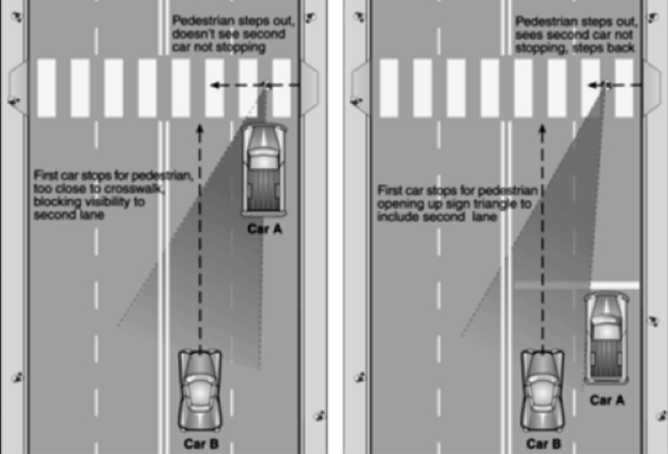
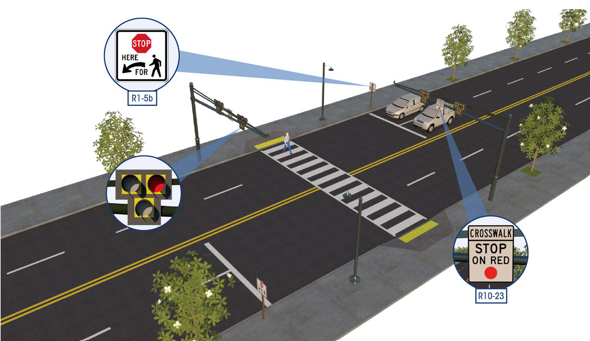
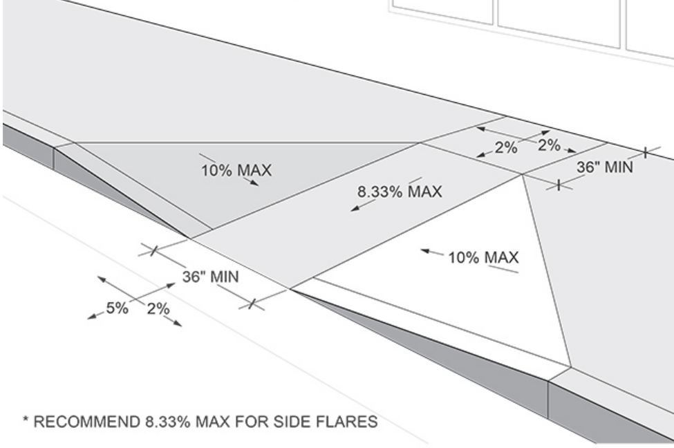

Traffic Control
Signals vs. Roundabouts
_Signals shall only be used if passing traffic signal warrent from MUTCD. Signals shall consider vehicles and pedestrians. *It is possible to have a signal where no warrents pass as long as reasoning is documented. studies should use 15 min. analysis for VPH.
Only be used if traffic study determines overall safety improvement. Only be used if will not conflict with any safety conflicts. Should consider volumes of left/right turning vehicles.
_Signals are the primary solution for heavy traffic at intersections greater then 45,000 AADT
_A roundabout can only accomadate ~1,000 vphpl. If multiple lanes are needed then carefull design vehicle turning analysis is to be done, in addition to the appropriate ROW.
_Signals are a huge benefit where there is a large number of left turning vehicles. e.x. interchanges and large collecters like supermarkets & office blocks.
Other Controls
No Control: All approaches are minor roads. Traffic volume less than 1,000 AADT. Aprox. 90^ turning.
Yield Control: Upgrade from no control if 2 or more crashes last 12 months. Less than 1,800 AADT or 140 vph. Anytime yielding to the ROW for pedestrians of cars.
Minor Stop Control: Restricted view requires vehicles to Stop in order to have proper departure site from minor approach. 3 or more crashes in previous 12 months. Lower class road advancing on to higher class road require stop control.
All-Way Stop Control: The satisfaction of a warrent and engineering judgement. Typical use for similar high traffic volumes on all approaches 300vph major and 200vph minor for and 8 hours of a day.
Refrences:
Roadway Geometry
Design Vehicles
All roadways must be designed to accomidate the design vehicle for the designated road class. All roadways must be designed for the potential of an oversized vehicle from a near by higher class road.
Pedestrians
Must be ADA complitant with average age of location. Must analyse area to see if special accomidations are needed for handicaped, elderly or children [e.x. limited: desicion making, hearing, sight and spatial awarenes]. Look for pedestrian generators in the local area and type of pedestrian from it.
Must have controls in place to have sufficent time to cross [gap=1/Q].
Speed Design
Speed Design is a ballace of Speed[V=miles/hour] vs. Density[K=veh/mile]
Important analysis of density is spacing [1/K=miles/vehicle]. Converting this to ft/veh is [1/k]*5280ft/mile. This is used for micro analysis of a roadway's level of service.
Another ballance is Speed[V=miles/hour] vs. Flow[Q=veh/hour].
Important analysis flow is gap [1/Q=hours/veh]. Converting this to sec/veh is [1/Q]*3600sec/hour. This is used for analysis in pedestrian crossing times across a roadway.
conversion [miles/hour]*1.47=[ft/sec]
Pedestrian speed is ~3.5 - 5 ft/sec or 2.5 - 3.5 miles/hour.
Low speed vehicles are slower than 45miles/hour or 66ft/sec. High speed vehicles are equal to or greater than this. Urban or low speed residential is typically equall to or less than 25miles/hour or 37feet/sec.
Special Considerations
Using an advance stop bar can prevent a multiple-threat crash. This occurs when a dirver can not visibly see a crossing pedestrian b/c of blocked sight from another vehicle. [Ususally happens at 2 through lanes in a midblock crossing].
All design considerations should give prefrence to pedestrian crosses. This includes crossing thru lanes, driveways, turning lanes, workzone areas, etc.
Curb ramps are a very important consideration for ADA compliance. There are multiple design criteria for curb ramps: Align curb with crosswalk, 5% landing max grade, 2% cross slope, etc.
Electromechanical Information
There is also an Electromechanical side to the technology used in transportation infastructure. This is used for management of power as a utility.
Roadway Drainage
Roadway drainge requires analysis of an area's drainage history. Drainage is simply preserving the roadway material and making travel safe by efficently removing water and preventing errosion.